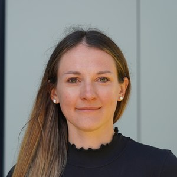
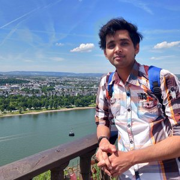
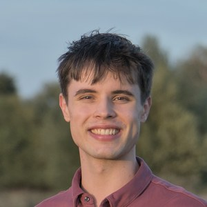

The Team
Principal Investigator

Dr. Johannes S. Hofmann
Staff Scientist
MPI for the Physics of Complex Systems
Dresden, Germany
jhofmann@pks.mpg.de
Johannes received his PhD from the University of Würzburg, where he worked with Fakher Assaad on quantum Monte Carlo methods and topological phases. He subsequently held postdoctoral positions at the Weizmann Institute of Science, hosted by Erez Berg. Since May 2024, he has been a staff scientist at MPI-PKS in Dresden, where he leads the CQMC research group. His research uses advanced numerical methods to study strongly correlated quantum matter, with particular interests in flat-band superconductivity, moiré materials, and fuzzy-sphere approaches to quantum phase transitions.
Postdoctoral Researchers

Dr. Lidia Stocker
Postdoctoral Researcher
MPI-PKS Dresden
PhD Students

Dhruv Tiwari
PhD Student
MPI-PKS Dresden

Alexander Gavrishev
PhD Student
MPI-PKS Dresden
Former Students, Interns & Visitors
We have had the pleasure of hosting and working with students and visitors from other institutions:
Join the Group
We are always interested in hearing from motivated students and researchers who want to work on strongly correlated quantum matter. If you are interested in a PhD or postdoctoral position, please send an email with your CV and a brief description of your research interests to jhofmann@pks.mpg.de.